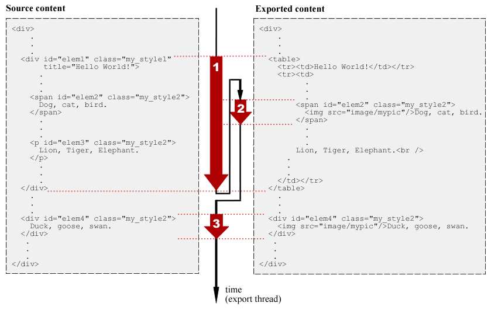
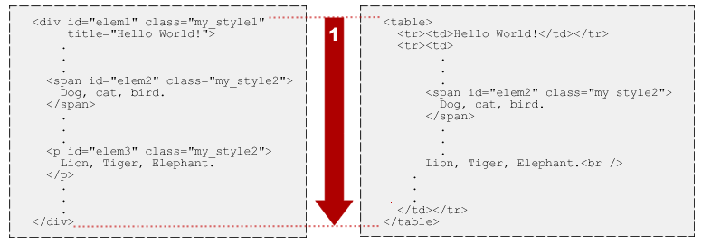
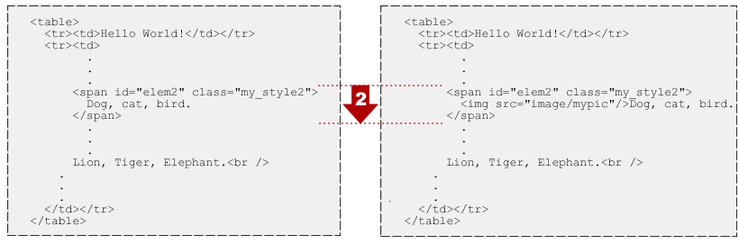
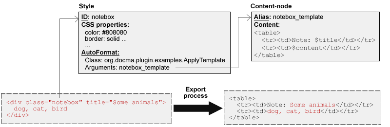

Docmenta allows users to create inline- and block-styles that authors can assign to content. On the source level, these user-defined styles represent CSS classes which are assigned to XHTML elements like div, span and others. For example, when an author selects words in the content-editor and assigns an inline-style with ID my_style to the selection, then following XHTML code is generated:
<span class="my_style">
... selected words ...
</span>
Accordingly, when an author selects one or more paragraphs or other block-elements and assigns a block-style with ID my_style to the selection, then e.g. following XHTML code is generated:
<div class="my_style">
<p>
... first selected block ...
</p>
<div class="other_style">
... second selected block ...
</div>
...
</div>
As you can see in the example above, elements can be nested: the block with style other_style is contained within the block with style my_style.
When you are working with pure XHTML and CSS, then a style is a set of CSS properties which define the font-size, font-color, background-color and so on. However, you cannot change the overall structure of a block just by changing the CSS properties of a style. For example, you cannot transform a simple paragraph into a table, just by using CSS properties. To allow such transformations, in Docmenta you can additionally assign one or more Auto-Format classes to a style. Basically an Auto-Format class is a piece of Java code that gets the element to which the style is assigned as input, and returns some replacement content. Following are two examples of such transformations:
Example 1:
In the first example an Auto-Format transformation converts the input-element
(highlighted in red) into a table with two rows. The first row is filled with
the value of the input-element's title attribute and the second row is filled
with the inner content of the input-element.
Furthermore any nested p element is replaced by a
<br/> element after the block (note that XHTML has to be
generated, i.e. <br/> has to be generated instead of
<br>).
The following illustration gives an example of the described transformation,
assuming that the transformation is assigned to a style with ID
my_style1:
<div class="my_style1"
title="Some animals">
<p>
Dog, cat, bird.
</p>
<p>
Sheep, pig, cow.
</p>
</div>
|
Auto-Format Transformation |
<table>
<tr>
<td>Some animals</td>
</tr>
<tr>
<td>
Dog, cat, bird.<br />
Sheep, pig, cow.<br />
</td>
</tr>
</table>
|
Example 2:
In the second example, an Auto-Format transformation just adds an inline image
with alias name mypic to the beginning of the content.
Following illustration gives an example, assuming that the transformation
is assigned to a style with ID mystyle_2:
<div class="my_style2">
Dog, cat, bird.
</div>
|
Auto-Format Transformation |
<div class="my_style2">
<img src="image/mypic" />Dog, cat, bird.
</div>
|
Note that in the second example, the outer div-block of the input is preserved in the result.
Two questions could arise: why should somebody need such transformations, and if it is needed, why not use a XSLT processor instead? To answer the first question, consider the situation, that you want to mark special paragraphs as warnings, e.g. in the rendered output these paragraphs shall be highlighted with an exclamation icon. However, you might need differnt designs for different output formats, and if the design of warnings has to be changed in the future, you want to avoid having to update the content at each position within your publication where a warning was inserted. Furthermore you want to assure that the same design of warnings is used throughout the publication. In Docmenta these problems can be partially solved by using style-variants, i.e. defining different CSS properties for the same style ID. Though, using style-variants is sufficient in many cases, you cannot change the overall layout of a block, just by changing the CSS properties of a style. For example, you cannot turn a simple box to become a table with two rows. However, such transformations can be done using Auto-Format classes. As an example of how to solve these issues with an Auto-Format class, see the example code below, which implements a dynamic template mechanism.
To answer the second question: Actually, you can implement an Auto-Format transformation by using a XSLT processor, though for many simple transformations string operations might be sufficient. In general, you can use any library or tool, whatever you consider best (e.g. DOM), to implement an Auto-Format transformation. The only restriction is, that is has to be possible to call the tool/library from within Java code.
Note that Auto-Format transformations are executed dynamically (on the fly) during publication export and during content preview. This means, the stored source content which was created by the authors is not persistently modified by these transformations. For example, if an Auto-Format transformation inserts an inline image into the content (see example 2 above), the image will only appear in the exported publication or when a preview of the content is rendered. But when the author edits the content, he will not see the inline image.
So far we've just had a look to what a single transformation does. Now we'll take a look at the complete export process and see how the transformations interact in specific situations. The left side of the following illustration shows the XHTML source fragment of a publication (only the elements are shown which are important for this example).

The source content contains four elements, elem1, elem2, elem3 and elem4, from which elem2 and elem3 are contained within elem1. The first element has the style mystyle_1 assigned. The other elements have the style mystyle_2 assigned. For this example, we assume that mystyle_1 and mystyle_2 have an Auto-Format transformation assigned as described in example 1 and 2 above.
During export and preview the source content is parsed top-down. As soon as an element is found which has an Auto-Format style assigned, this element is transformed. Therefore, in our example the first element to be transformed is elem1. The result of this transformation is a table with the element's title in the first row and the element's inner content in the second row. Furthermore the p element is replaced by a <br />. Following illustration depicts the first transformation:

Now, the result of the first transformation is parsed again, to see if there are further Auto-Format styles to be processed. Actually, there is still the element elem2 in the result, which has the style my_style2 assigned. Therefore the second transformation is to transform elem2, as shown in the following illustration:

After this transformation, there are no more Auto-Format styles to be processed, and the parsing continues in the source content after the element elem1, i.e. the third transformation is the processing of element elem4. Note that element elem3 is not transformed, because the p element was removed by the first transformation.
You might wonder why the transformation of elem2 does not lead to an infinite loop, because the result of this transformation still contains the element <span id="elem2" class="my_style2">, which originally caused the transformation. The reason is, that by default, the style which caused a transformation is not processed any more during the parsing of the transformation result. However, the Auto-Format API allows a programmer to disable this behavior by calling the method setStyleRecursion(true) (note however, that the recursion level is limited by the execution engine to avoid infinte loops).
In Docmenta it is possible to assign more than one Auto-Format transformation to a single style. If this is the case, then the output of the first transformation is used as input for the second transformation. If a third Auto-Format transformation is assigned to the style, then the output of the second transformation is used as input for the third transformation, and so on. The following illustration depicts this pipeline process:
|
Element |
Auto-Format 1 |
Result 1 |
Auto-Format 2 |
Result 2 |
Auto-Format 3 |
. . . |
As an example, consider the situation that you want to include program listings in your publications. The listings shall have line-numbers and the key-words of the programming language shall be highlighted. To solve this requirements without having to format the listings manually, you could create one Auto-Format transformation which adds line-numbers to the content, and a second Auto-Format transformation which highlights the keywords. Both transformations could be implemented completely independent of each other. To achieve the required formatting you could create a style, e.g. with ID listing, which has both transformations assigned. Following illustration depicts the transformation steps of an element which has the style listing assigned:
<div class="listing">
if (a > 0) a = b;
else a = c;
</div>
|
Highlight Keywords |
<div class="listing">
<span class="key">if</span> (a > 0) a = b;
<span class="key">else</span> a = c;
</div>
|
||
|
||||
<div class="listing">
1 <span class="key">if</span> (a > 0) a = b;
2 <span class="key">else</span> a = c;
</div>
|
The first transformation highlights keywords by enclosing them with span elements which have the style key assigned. The second piped transformation adds the line numbers. Note that the result of the first Auto-Format transformation is processed by the second piped Auto-Format transformation, even though the result does not contain any more Auto-Format styles to be processed (assuming that the style key has no Auto-Format transformation assigned). If the style key had an Auto-Format style assigned, then the span elements would be processed after the pipeline of transformations has been completely processed (assuming the span elements aren't removed by the piped transformations).
A special case occurs, if the result of a transformation does not contain a single root element. If a transformation produces more than one root element, then the following piped transformation will be applied to all root elements. If, on the other hand, a transformation does not return any XML element at all, e.g. it just returns a character string of type #PCDATA, then the following piped transformations will be skipped (note that an Auto-Format transformation can only be applied to a XML input-element).
As an example of implementing an Auto-Format transformation, this section describes the source code of the Auto-Format class org.docma.plugin.examples.ApplyTemplate, which is included in the Docmenta installation package. See the Docmenta Tutorial for more information on how to use this class. Following illustration depicts the template concept that is implemented by the class:
In words: the org.docma.plugin.examples.ApplyTemplate class replaces the input-element by the content of a template node. The substring "$content" within the template is replaced by the inner content of the input-element and the substring "$title" is replaced by the title-attribute of the input-element. The template node is identified by its alias name, which is provided as Auto-Format argument in the style definition (here: notebox_template).
Following the source code of the org.docma.plugin.examples.ApplyTemplate class, that implements this template concept:
1
2
3
4
5
6
7
8
9
10
11
12
13
14
15
16
17
18
19
20
21
22
23
24
25
26
27
28
29
30
31
32
33
34
35
36
37
38
39
40
41
42
43
44
45
46
47
48
|
/*
* ApplyTemplate.java
*/
package org.docma.plugin.examples;
import org.docma.plugin.*;
import java.io.*;
public class ApplyTemplate implements AutoFormat
{
private ExportContext exportCtx;
public void initialize(ExportContext ctx)
{
exportCtx = ctx;
}
public void finished()
{
exportCtx = null;
}
public void transform(TransformationContext ctx) throws Exception
{
String alias = ctx.getArgument(0);
String template = exportCtx.getContentStringByAlias(alias, true);
if (template == null) {
throw new Exception("Could not find template with alias " + alias);
}
String title = ctx.getTagAttributes().get("title");
if (title == null) title = "";
Writer out = ctx.getWriter();
out.write(template.replace("$content", ctx.getInnerString()).replace("$title", title));
}
public String getShortInfo(String languageCode)
{
return PluginUtil.getResourceString(this.getClass(), languageCode, "shortInfo");
}
public String getLongInfo(String languageCode)
{
return PluginUtil.getResourceString(this.getClass(), languageCode, "longInfo");
}
}
|
An Auto-Format transformation is a Java class that implements the interface org.docma.plugin.AutoFormat. The interface consists of five methods: initialize, finished, transform, getShortInfo and getLongInfo.
The method initialize is intended for initialization of a new instance of the Auto-Format class, i.e. it is always called by the export process before the method transform is called for the first time. The method gets an instance of the class org.docma.plugin.ExportContext as argument, which provides access to the context of the running export. This includes
In this example the method just assigns the argument to the field exportCtx. This way the method transform, which is called for each element to be transformed, also has access to the export context.
The method finished is called by the export process as soon as the complete export of the publication is finished. Therefore this method can be used to release any resources that have been allocated by the Auto-Format class. In this example it just sets the field exportCtx to null (this is not required, though it allows the garbage collector to free memory, which is allocated by the export context, as early as possible).
The method transform actually executes the transformation of an element. This method is called by the export process each time an element within the publication has to be transformed by this Auto-Format class (i.e. only one instance of the Auto-Format class exists for one export process). The method gets an instance of the class org.docma.plugin.TransformationContext as argument, which gives access to the element to be transformed and provides a writer object to write the transformation result.
When an Auto-Format class is assigned to a style, the user can set Auto-Format arguments. With Auto-Format arguments the behavior of an Auto-Format class can be parameterized. In this example, the ApplyTemplate class expects one argument, which is the alias name of the content-node to be used as template. The Auto-Format arguments can be retrieved from the transformation context. Therefore, the first action within the method transform is to get the first Auto-Format argument from the transformation context:
String alias = ctx.getArgument(0);
The returned alias name is then used to retrieve the template-content:
String template = exportCtx.getContentStringByAlias(alias, true);
If no content-node with the given alias name is found, an exception is thrown. Note that throwing an exception will cause an error message in the export log. However the export continues without transforming the element. The next action is to retrieve the value of the input-element's title attribute:
String title = ctx.getTagAttributes().get("title");
If no title attribute is defined in the input-element, then the empty string is used as title:
if (title == null) title = "";
Then the substring "$content" within the template is replaced by the inner content of the input-element:
template.replace("$content", ctx.getInnerString())
and the substring "$title" is replaced by the title value:
.replace("$title", title)
Finally, the resulting string is returned as transformation result:
Writer out = ctx.getWriter(); out.write(...);
The method getShortInfo is intended to return a human-readable text describing the purpose of this Auto-Format transformation in one sentence. The method getLongInfo is intended to return a complete usage reference, including a description of all supported Auto-Format arguments. The returned text of both methods is displayed to the user of the Auto-Format class. For better readability the text returned by method getLongInfo can include XHTML tags, which allows basic formatting of the text. The text which is returned by both methods should be in the language given by the argument languageCode. At least the language code "en" has to be supported (i.e. the descriptions have to be available at least in English).
For long descriptions and to allow the translation of the descriptions without having to touch the source code of the classes, the text returned by the methods getShortInfo and getLongInfo should be stored in external resource files. You can use the static method getResourceString of the utility class org.docma.plugin.PluginUtil to load a language dependent property from an external resource file, as shown in this example. The path of the resource file is derived from the provided class and language code by replacing all dots within the full-qualified class name by a dash ("/"), appending the language code separated by an underscore and attaching the file extension ".xml". Therefore, in our example the path to the resource file for the English language (language code "en") is org/docma/plugin/example/ApplyTemplate_en.xml. In other words, a resource file with name ApplyTemplate_en.xml has to be located in the same folder within the jar archive where the corresponding class file is located.
The format of the resource file is the XML properties format as used by the Java class java.util.Properties (see the Java Standard Edition API documentation for more information). Following an example of the resource file ApplyTemplate_en.xml:
1
2
3
4
5
6
7
8
9
10
11
12
13
14
15
16
17
18
19
| <?xml version="1.0" encoding="UTF-8"?>
<!DOCTYPE properties SYSTEM "http://java.sun.com/dtd/properties.dtd">
<properties>
<entry key="shortInfo">Format input using a template with placeholder strings.</entry>
<entry key="longInfo"><![CDATA[
<big><b>Arguments:</b></big>
<ul>
<li><b><tt><i>ALIAS</i></tt></b>:
<br />The alias name of the template node.</li>
</ul>
<p><big><b>Description:</b></big></p>
<p>
The content-node given by alias name <tt><i>ALIAS</i></tt>
is used as a template. It is assumed that the template content
contains the substrings "<tt>$title</tt>" and "<tt>$content</tt>".
</p>
]]>
</entry>
</properties>
|
Note that a CDATA section is used for the value of the longInfo property, because the property value contains XHTML tags, which would otherwise interfere with the XML properties format.
To use the Auto-Format transformation, just place the compiled ApplyTemplate class together with the resource file ApplyTemplate_en.xml into the class path of the Docmenta application.
Improving the performance of the implementation
As mentioned above, the method transform is called for each occurence of an element to be transformed. Therefore the performance can be improved by caching the template content. Following listing gives the improved source code of the ApplyTemplate class (the changed lines are highlighted):
1
2
3
4
5
6
7
8
9
10
11
12
13
14
15
16
17
18
19
20
21
22
23
24
25
26
27
28
29
30
31
32
33
34
35
36
37
38
39
40
41
42
43
44
45
46
47
48
49
50
51
52
53
54
55
56
57
58
59
| /*
* ApplyTemplate.java
*/
package org.docma.plugin.examples;
import org.docma.plugin.*;
import java.util.*;
import java.io.*;
/**
*
* @author MP
*/
public class ApplyTemplate implements AutoFormat
{
private ExportContext exportCtx;
private Map<String, String> templateMap;
public void initialize(ExportContext ctx)
{
exportCtx = ctx;
templateMap = new HashMap<String, String>();
}
public void finished()
{
exportCtx = null;
templateMap = null;
}
public void transform(TransformationContext ctx) throws Exception
{
String alias = ctx.getArgument(0);
String template = templateMap.get(alias);
if (template == null) {
template = exportCtx.getContentStringByAlias(alias, true);
if (template == null) {
throw new Exception("Could not find template with alias " + alias);
}
templateMap.put(alias, template);
}
String title = ctx.getTagAttributes().get("title");
if (title == null) title = "";
Writer out = ctx.getWriter();
out.write(template.replace("$content", ctx.getInnerString()).replace("$title", title));
}
public String getShortInfo(String languageCode)
{
return PluginUtil.getResourceString(this.getClass(), languageCode, "shortInfo");
}
public String getLongInfo(String languageCode)
{
return PluginUtil.getResourceString(this.getClass(), languageCode, "longInfo");
}
}
|
Note that different styles can set different Auto-Format arguments, i.e. it is not sufficient to cache just a single template. Therefore, in the implementation above, a java.util.HashMap object is used to cache the templates.